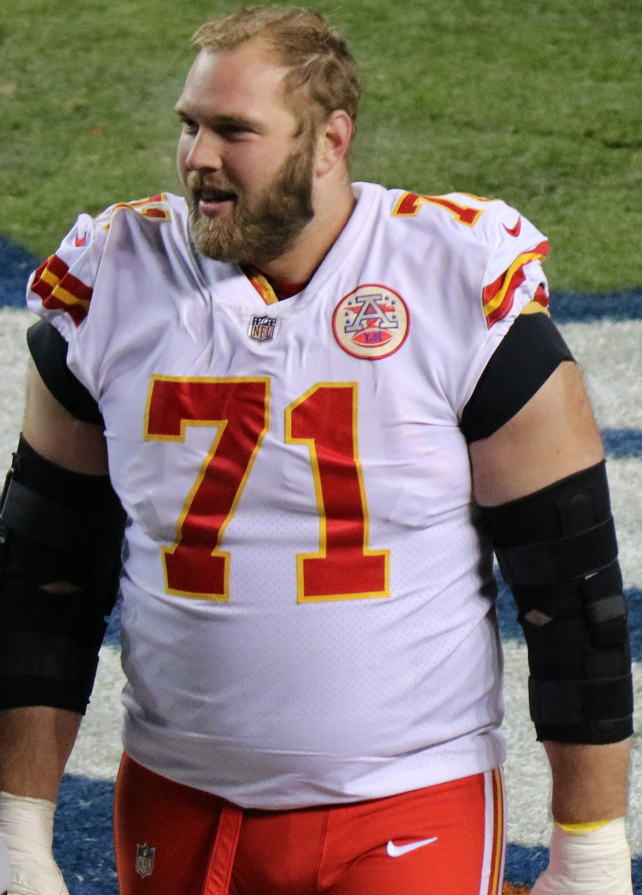

The Kansas City Chiefs have begun their process of creating cap space with the release of two Pro-Bowl offensive lineman, Mitch Schwartz and Eric Fisher. Both are currently recovering from injuries sustained during the season. Mitch a back injury that required surgery and Fisher a torn achilles suffered in the AFC Championship game.

Franchise Tags
Buccaneers franchise tag receiver Chris Godwin.
Dak Gets Paid
Dak Prescott has received a much anticipated extension from the Dallas Cowboys. The extension gives Dak a salary of over $40 million per year and rivals that of Patrick Mahomes at $45 million. This extension comes after Dallas missed the playoffs after losing Dak to a season ending injury early on.